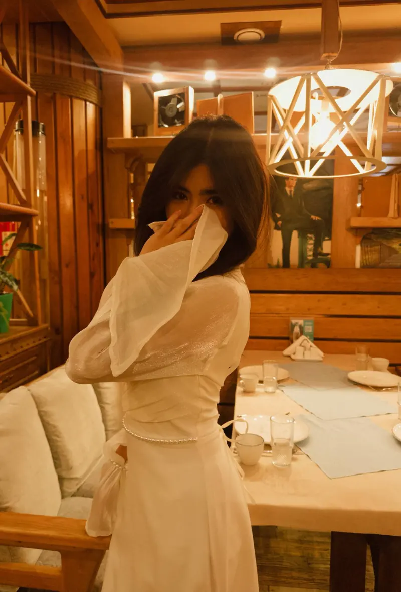
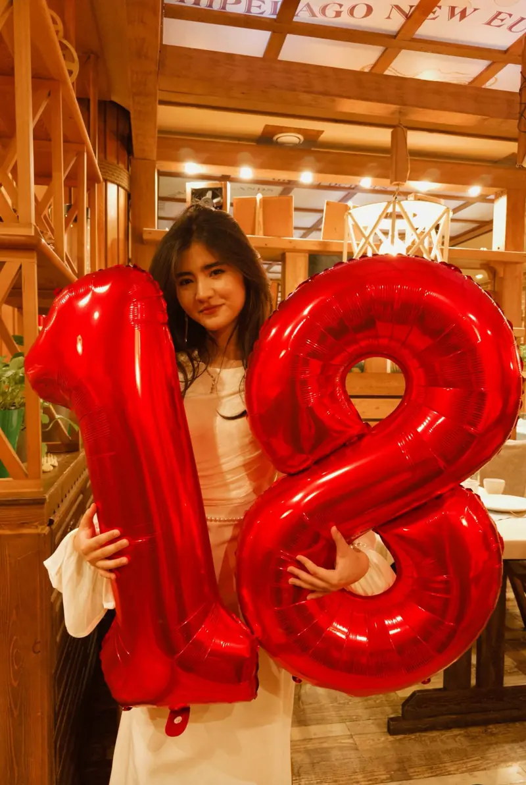
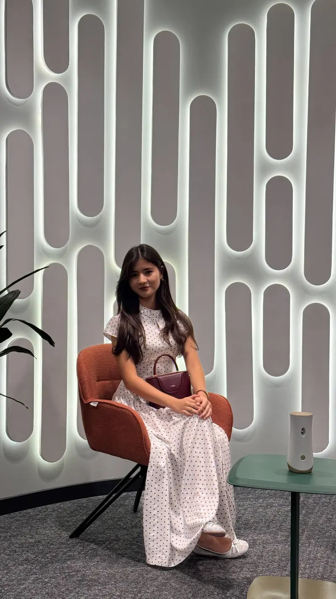
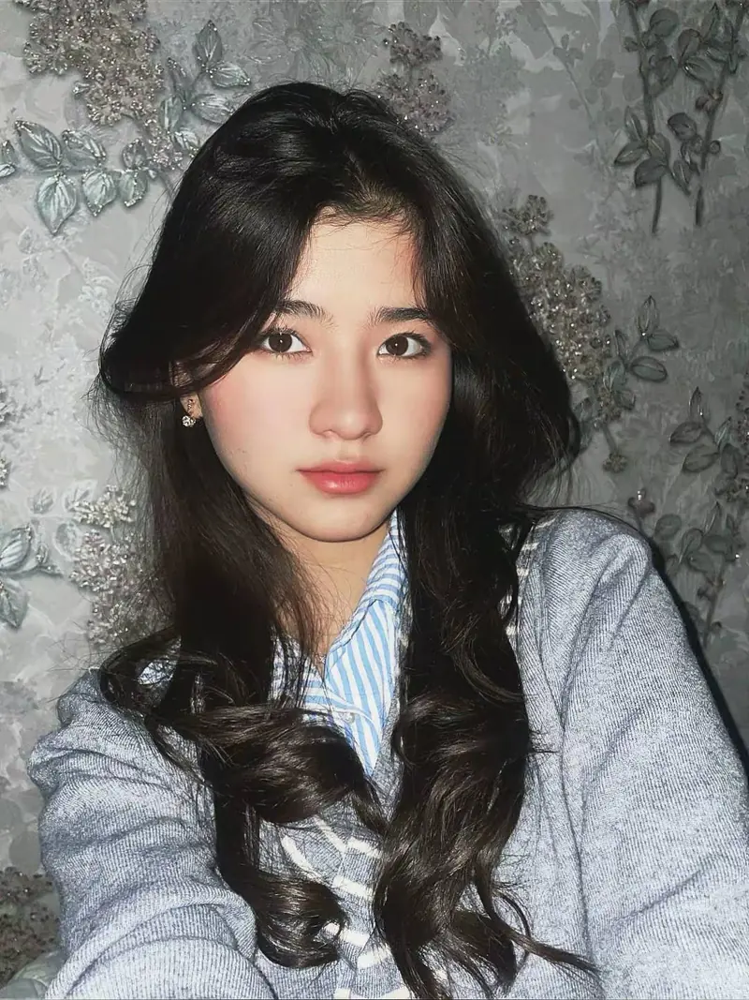
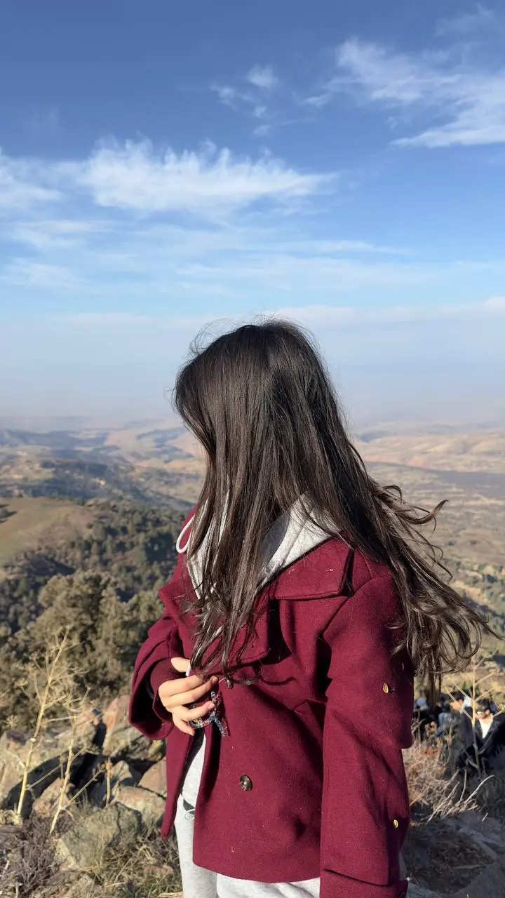
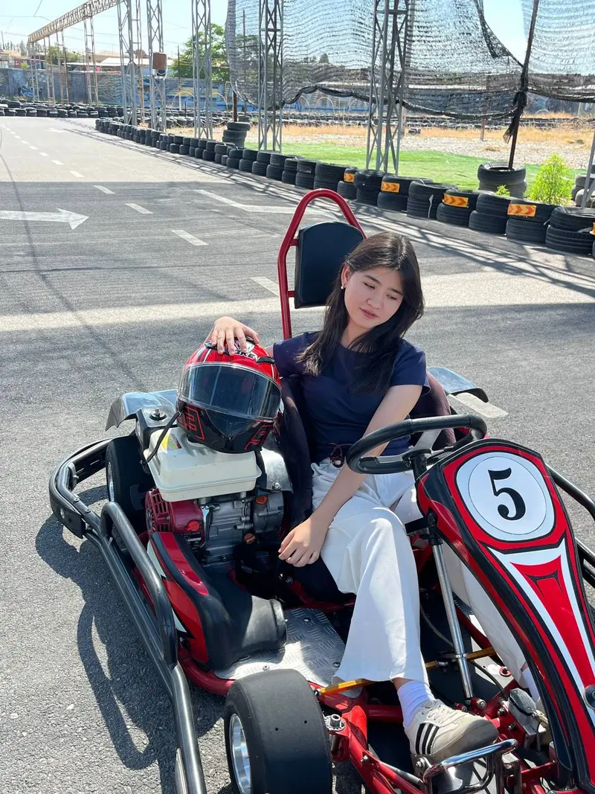
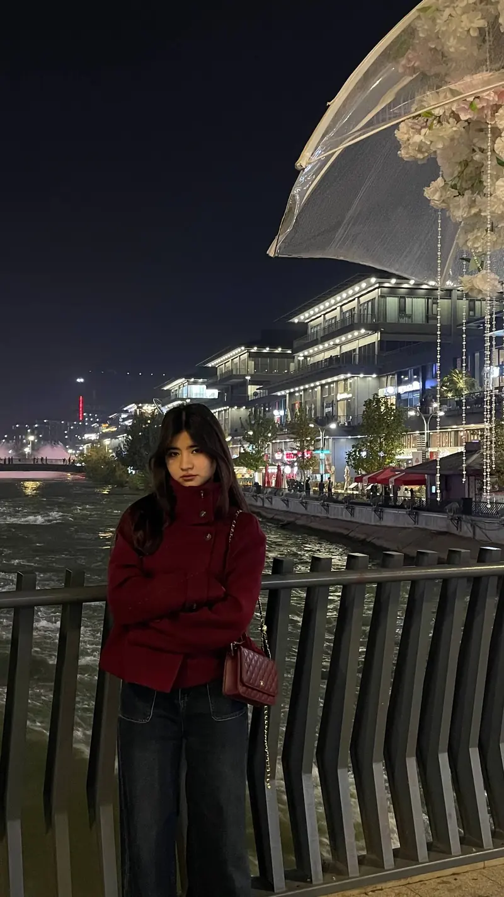
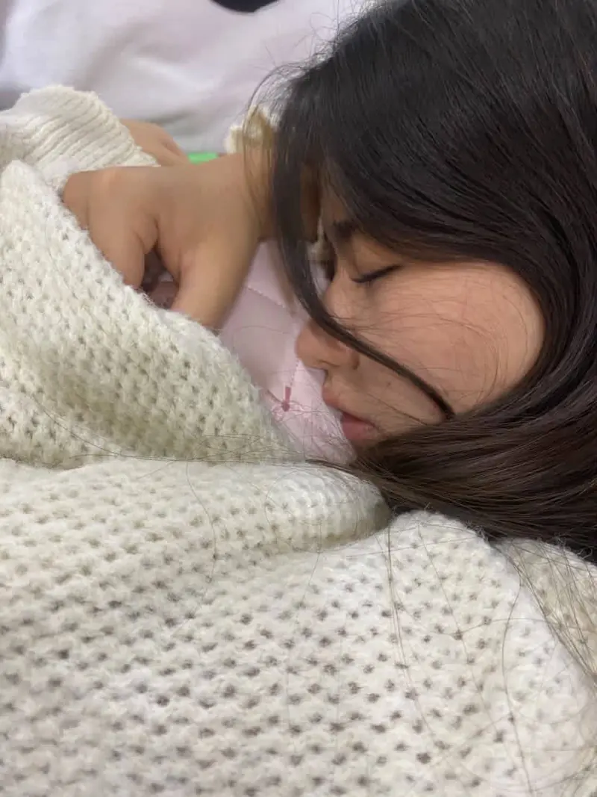

Soliha's birthday
My 18!
Maxsus xat yagona nusxa

Ochish uchun muhrni bosing
Musiqani eshitish uchun telefon ovoziniovozni balandroq qiling
Kichik albom N°18 Kuz 2026
Bir nechta lahza, bitta qo‘shiq va kechikkan tabrik.
Pastga suring
Ba’zi suratlar shunchaki surat emas. Ularda yorug‘lik, kayfiyat va bir lahzalik sukunat bor. Bu sahifa — ana shunday lahzalardan yig‘ilgan kichik sovg‘a.
Shoshilmang. Musiqa chalinib tursin, siz bemalol varaqlang.
IBayram
Tabrik biroz kechikdi:
0kun
Lekin yaxshi tilakning muddati o‘tmaydi.

O‘n sakkiz yosh — hamma eshik endigina ochilayotgan payt. Har bir yangi kuningiz shu suratlardagidek yorug‘, shu gullardek yangi, shu sharlardek yengil bo‘lsin.
Sizga mustahkam sog‘liq, cheksiz baxt va omad tilayman. Kulgingiz so‘nmasin, orzularingiz birma-bir ushalsin.
Taklifnomangizdan ilhomlangan
Bitta tilak
Ko‘zingizni yuming, tilak qiling, keyin shamlarni o‘chiring.
Tilak qabul qilindi. Uni hech kimga aytmang — shunda ushaladi.
Keyingi tug‘ilgan kuningizgacha — kun qoldi
IIXatlar
Ichida bittadan lahza va bir nechta muhim ma’lumot bor.
Hamma xat o‘qildi. Endi desertga o‘tsak bo‘ladi.
IVUslub
Muqova, uchta sahifa va bir nechta jiddiy maslahat. Sotuvda yo‘q. Tiraji: bitta nusxa.
Sahifani bosib varaqlang

Bosh maqola
Kostyum joyida, soat joyida, nigoh ham. Yig‘ilish boshlanishi mumkin.
Maslahat
Qo‘l boshda, nigoh kamerada, tashvish yo‘q. Boshqa qoida kerak emas.

Portret
Ba’zi portretlar o‘zi gapiradi.
Keyingi son
N°19
Chiqish sanasi:
24 oktabr, 2027
Hammasi o‘z vaqtida. Bu safar kechikmaslikka harakat qilinadi.
VBalandlik

Yo‘llaringiz shu manzaradek keng, ko‘nglingiz shu osmondek ochiq bo‘lsin.

Poygadan oldin
Dubulg‘a qo‘lda, rul oldida, shoshilish yo‘q. Chunki marra baribir sizniki.

VIOqshom
Kayfiyat: «meni suratga olma».
Natija: eng yaxshi kadrlardan biri.
VIITun
Shsh…

Bugungi kunning hamma tashvishi shu yerda to‘xtasin.
Yumshoq jun, iliq sukunat va bir necha soatlik xotirjamlik. Boshqa hech narsa kerak emas.
Tushingizga faqat yaxshi narsalar kirsin: tog‘lar, gullar, yana bitta desert.
Shirin tushlar, Soliha
Xat shu yerda tugaydi
Bu sahifani xohlagan paytingiz qayta ochishingiz mumkin. Kerak bo‘lgan kunlarda eslatib tursin: kulgingiz xonani yoritadi, tanlagan yo‘lingiz esa faqat o‘zingizniki.
Yangi yoshingiz muborak bo‘lsin
Qo‘shiq: Krasivaya Tiraji: 1 nusxa Noyabr 2026